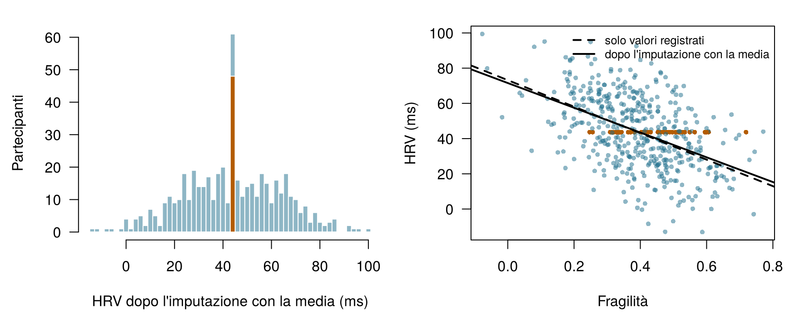
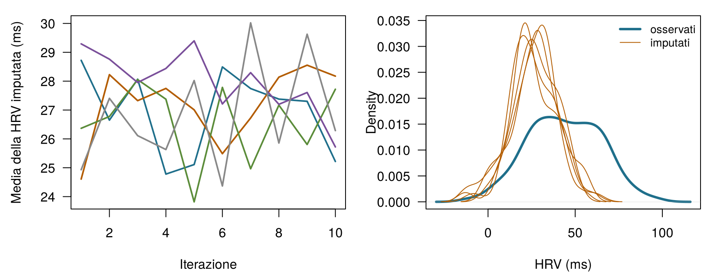
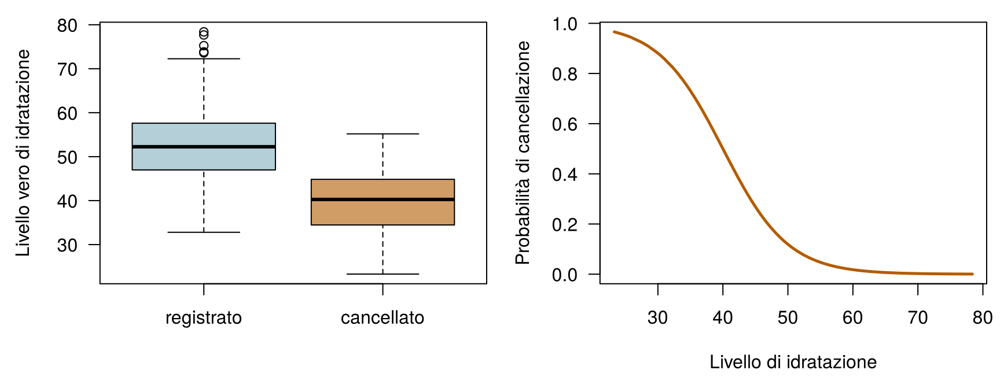

x <- c(10, 12, NA, 16)
mean(x) # R si rifiuta: la risposta è ignota[1] NAmean(x, na.rm = TRUE) # la media dei valori che sono stati registrati[1] 12.66667Quattro domande per scaldarti. Prova a indovinare: il capitolo risponde a ciascuna di esse.
| Domanda | La tua risposta |
|---|---|
| Quattro letture di HRV valgono 10, 12, (mancante) e 16 ms. Qual è la media dei valori registrati? (scrivi un numero) | |
| Riempi ogni lacuna di una colonna con la media della colonna. La deviazione standard della colonna … | |
| La batteria dell'orologio si scarica in momenti che non hanno nulla a che fare con la salute di chi lo indossa. Questi dati mancano … | |
| L'imputazione multipla riempie ogni lacuna con … |
Questo capitolo riprende alcune idee dai capitoli precedenti. Eccole, una riga ciascuna:
| Esempio | Chi o che cosa | Esito | Volti che incontrerai |
|---|---|---|---|
| 1 Terapia intensiva del Reparto 7 | 1.250 pazienti di terapia intensiva in 4 ospedali | variazione della creatinina in 48 h (danno renale acuto se ≥ 0,3 mg/dL) | Aoife (71 anni, sepsi, rischio borderline), Tomás (54 anni, rischio basso), Priya (38 anni, rischio alto); la dott.ssa Emma Walsh; Seán, il farmacista |
| 2 Studio ONCO-1 | 1.000 pazienti randomizzati a ricevere o meno la chemioterapia | riduzione del tumore (%) | i pazienti #0042 e #0917 |
| 3 HomeBeat | 500 persone che indossano uno smartwatch a casa | punteggio di stress, evento di peggioramento | Lena |
| 4 CellWorks | 420 lotti di produzione di una terapia cellulare | punteggio di potenza | il lotto CW-118 |
Tutti e quattro i dataset sono simulati e si possono scaricare dall’appendice sui dati. La presentazione completa si trova in Sezione 1.1.
Questo capitolo parla dei buchi in un dataset: perché si formano, che cosa fanno le soluzioni facili alle tue conclusioni e come gestirli in modo onesto. Usa soprattutto HomeBeat (Esempio 3) e una versione del Reparto 7 (Esempio 1) in cui alcuni valori di laboratorio non sono mai stati registrati. Comprende undici sezioni e un Laboratorio, sette verifiche rapide, tre widget “Prova tu”, una sfida e tre missioni di programmazione in R e Python. Calcola circa due ore.
| Simbolo | Significato | Sezione |
|---|---|---|
| \(R_{ij}\) | indicatore di dato mancante: 1 se il valore della variabile \(j\) per l’istanza \(i\) è osservato, 0 se manca | Sezione 9.1 |
| \(\mathbf{D}\), \(\mathbf{D}_{\text{obs}}\), \(\mathbf{D}_{\text{mis}}\) | l’intera tabella dei dati, la sua parte osservata, la sua parte mancante | Sezione 9.4 |
| \(M\) | numero di imputazioni (dataset completati) | Sezione 9.7 |
| \(\hat\theta_m\), \(\bar\theta\) | stima ottenuta dal dataset completato \(m\); stima combinata | Sezione 9.7 |
| \(V_W\), \(V_B\), \(V_T\) | varianza entro le imputazioni, varianza tra le imputazioni e varianza totale | Sezione 9.7 |
| \(\delta\) | spostamento applicato ai valori imputati in un’analisi di sensibilità | Sezione 9.9 |
L’elenco completo si trova nella pagina della notazione.
I dati mancanti vengono spesso trattati come un fastidio tecnico, qualcosa che “capita e basta” e che si ripulisce prima che cominci l’analisi vera. Le loro conseguenze vanno molto più a fondo, e per capire perché basta la statistica più semplice di tutte: la media.
Definizione 9.1 (Valore mancante e indicatore di dato mancante) Un valore mancante è un valore che avrebbe dovuto essere registrato ma non lo è stato: un esame di laboratorio mai richiesto, una domanda di un questionario lasciata in bianco, una notte in cui l’orologio non ha registrato nulla. In R e in pandas compare come NA o NaN. Per ogni cella di una tabella di dati scriviamo l’indicatore di dato mancante \(R_{ij} = 1\) se il valore della variabile \(j\) per l’istanza \(i\) è osservato e \(R_{ij} = 0\) se manca. La tabella di tutti gli \(R_{ij}\) è lo schema dei dati mancanti (missingness pattern) (Little e Rubin 2020, cap. 1).
La media campionaria di \(n\) valori è
\[ \bar{x} = \frac{1}{n}\sum_{i=1}^{n} x_i = \frac{x_1 + x_2 + \dots + x_n}{n} . \qquad(9.1)\]
La formula dà tacitamente per scontato che ogni \(x_i\) esista. Prendi quattro letture di HRV, 10, 12, 14 e 16 ms: la loro media è \((10+12+14+16)/4 = 13\). Ora supponi che la terza lettura non sia mai stata registrata. La formula chiede \((10 + 12 + {?} + 16)/4\), e non ha alcuna istruzione per il punto interrogativo.
x <- c(10, 12, NA, 16)
mean(x) # R si rifiuta: la risposta è ignota[1] NAmean(x, na.rm = TRUE) # la media dei valori che sono stati registrati[1] 12.66667Il rifiuto di R è onesto. Aggiungere na.rm = TRUE (“rimuovi gli NA”) dà \((10 + 12 + 16)/3 = 12{,}67\), ma nota che cosa è cambiato: un valore è stato scartato, il numero di valori è passato da quattro a tre, e il risultato risponde a una domanda diversa: qual è la media delle letture che ci troviamo ad avere? Con l’indicatore \(R_i\) diventa
\[ \bar{x}_{\text{obs}} = \frac{\sum_{i=1}^{n} R_i\, x_i}{\sum_{i=1}^{n} R_i} , \qquad(9.2)\]
che stima la media di tutti solo se le letture registrate sono un campione rappresentativo di tutte le letture. Quando non lo sono (quando, come nell’orologio di Lena, sono proprio le letture basse a mancare), \(\bar{x}_{\text{obs}}\) è distorta, e nessuna quantità di dati in più la corregge.
Le altre soluzioni rapide non vanno meglio. Riempire la lacuna con zero dà \((10+12+0+16)/4 = 9{,}5\), una media determinata da una scelta arbitraria. Riempirla con la media degli altri tre restituisce 12,67, ma ora sembra che il risultato poggi su quattro misure, quando ne sono state fatte solo tre. Anche per una media, quindi, i dati mancanti rendono la risposta indefinita senza un’ipotesi, sensibile all’ipotesi scelta e distorta se l’ipotesi è sbagliata. I modelli di regressione, che combinano molte variabili, sono ancora più esposti.
La dashboard di Lena mostra la media dei valori di HRV che il suo orologio ha registrato in 30 notti. A quale condizione è una stima corretta della sua HRV media su tutte le 30 notti?
Prima dei metodi rigorosi, conviene vedere le tre scorciatoie a cui gli analisti ricorrono più spesso. Sono diffuse perché sono facili e sembrano prive di ipotesi. Non lo sono, e i dati di HomeBeat mostrano che cosa fanno. Nella versione dei dati che il gruppo dello studio ha davvero (homebeat_missing.csv), quattro segnali del dispositivo indossabile presentano lacune: frequenza cardiaca a riposo (30 valori mancanti), HRV (48), temperatura cutanea (31) e indice di attività (45). Poiché i dati sono simulati, abbiamo anche la versione completa (homebeat.csv) e possiamo confrontare ogni scorciatoia con la verità: un lusso che nessuno studio reale può permettersi.
Definizione 9.2 (Analisi dei casi completi ed eliminazione a coppie) L’analisi dei casi completi (detta anche eliminazione per lista, listwise deletion) tiene solo le righe in cui tutte le variabili usate sono osservate. L’eliminazione a coppie (pairwise deletion, detta anche analisi dei casi disponibili) usa, per ogni calcolo, tutte le righe in cui sono osservate le variabili di quel calcolo, così quantità diverse poggiano su sottoinsiemi diversi di righe.
L’analisi dei casi completi è l’impostazione predefinita della maggior parte dei software, per cui spesso avviene senza che ce ne accorgiamo. 134 dei 500 partecipanti di HomeBeat (27 %) hanno almeno una lacuna, quindi un’analisi dei casi completi dell’intera tabella lavora con 366 persone. I partecipanti scartati non sono una fetta casuale: la HRV media di tutti è 42,2 ms, la media di tutti i valori di HRV registrati è 43,7 ms e la HRV media dei casi completi è 46,4 ms. Ogni passo che ci allontana da “tutti” elimina altre letture basse.
L’eliminazione a coppie conserva più dati per ogni calcolo: la correlazione tra HRV e fragilità usa 452 partecipanti, quella tra HRV e frequenza cardiaca a riposo 427 e quella tra fragilità e frequenza cardiaca a riposo 470. Ogni correlazione descrive un gruppo di persone leggermente diverso, quindi insieme possono formare una matrice che nessun singolo dataset potrebbe produrre, e questo fa fallire o comportare in modo erratico i metodi costruiti su quella matrice (componenti principali, analisi fattoriale, alcuni algoritmi di apprendimento) (Little e Rubin 2020).
Definizione 9.3 (Imputazione e imputazione singola) L’imputazione sostituisce ogni valore mancante con un valore previsto o estratto dai dati. L’imputazione singola riempie ogni lacuna una sola volta (con zero, la media, la mediana, una previsione di regressione) e poi analizza la tabella completata come se fosse stata osservata per intero.
L’imputazione singola con la media fa sembrare completa una tabella, ma a caro prezzo. La Figura 9.1 mostra la HRV dopo che ogni valore mancante è stato sostituito con la media osservata. I 48 partecipanti riempiti si accumulano su un unico valore, la deviazione standard scende da 21,0 a 19,9 ms e la correlazione tra HRV e fragilità viene schiacciata verso zero, da -0,50 a -0,48. Lo zero è peggio: una HRV di 0 ms è fisiologicamente impossibile, quindi crea un gruppo di falsi pazienti estremi. La mediana si comporta come la media: è più robusta ai valori anomali, ma produce lo stesso picco e la stessa perdita di dispersione.

Tutte e tre le scorciatoie gestiscono le lacune per convenzione, invece di ragionare sul perché i valori mancano. L’imputazione singola ha un secondo difetto, più sottile: tratta un’ipotesi come una misura, per cui ogni errore standard calcolato in seguito risulta troppo piccolo (Little e Rubin 2020; Buuren 2018).
Un collega riempie i valori mancanti di HRV con la media e poi riporta una correlazione tra HRV e fragilità. Qual è la conseguenza più probabile?
Conta le lacune. I dati di HomeBeat con valori mancanti sono caricati come hb. Riempi lo spazio vuoto con la funzione che segna ogni cella come mancante (TRUE) o presente (FALSE), così che la riga conti i valori mancanti in ogni colonna.
La funzione è is.na(). Applicata a un data frame restituisce una tabella di TRUE/FALSE, e colSums() conta i TRUE di ogni colonna.
colSums(is.na(hb))Il metodo è .isna(); poi .sum() conta i valori True di ogni colonna.
hb.isna().sum()Medie e correlazioni sono solo l’inizio. Supponi che il gruppo di HomeBeat voglia sapere come il punteggio di stress dipende da fragilità, HRV e frequenza cardiaca a riposo, e stimi il modello lineare del Capitolo 4,
\[ \text{punteggio di stress} = \beta_0 + \beta_1\,\text{fragilità} + \beta_2\,\text{HRV} + \beta_3\,\text{FC a riposo} + \varepsilon . \]
La funzione lm() di R scarta senza avvisare ogni partecipante con una lacuna in una qualsiasi di queste variabili, quindi il modello usa 427 dei 500 partecipanti. La Tabella 9.1 confronta questa stima sui casi completi con quella sui dati completi, che in questa simulazione fa le veci della verità, e con l’imputazione con la media e l’imputazione multipla, che costruiremo più avanti nel capitolo.
| Analisi | n | Fragilità | HRV | FC a riposo |
|---|---|---|---|---|
| Dati completi (la verità in questa simulazione) | 500 | 11.07 (2.84) | -0.515 (0.026) | 0.679 (0.042) |
| Analisi dei casi completi | 427 | 9.41 (3.18) | -0.509 (0.028) | 0.708 (0.047) |
| Imputazione con la media | 500 | 16.81 (3.11) | -0.493 (0.027) | 0.749 (0.042) |
| Imputazione multipla (M = 50) | 500 | 11.18 (2.96) | -0.505 (0.027) | 0.691 (0.044) |
Il coefficiente della fragilità nei casi completi è 9,41, contro 11,07 nei dati completi. Viene la tentazione di leggere questo calo come una distorsione: i partecipanti più fragili perdono più spesso la frequenza cardiaca a riposo, quindi, secondo questo ragionamento, le persone più fragili sono sottorappresentate e l’effetto della fragilità è sottostimato. È una spiegazione naturale. Ma è vera?
Guarda prima gli errori standard. Una differenza di 1,65 sta ampiamente entro un errore standard (circa 3,2), quindi un singolo dataset non può distinguere una distorsione dalla sfortuna. Una simulazione sì. Abbiamo preso i dati completi, cancellato valori più e più volte con esattamente le stesse regole (HRV mancante più spesso sopra i 60 anni, frequenza cardiaca a riposo mancante più spesso tra i più fragili), ristimato ogni volta il modello sui casi completi e fatto la media (Tabella 9.2, scenario A). Su 200 ripetizioni il coefficiente della fragilità nei casi completi ha in media il valore 11,02: la verità, a meno del rumore di simulazione. Il calo nel nostro unico dataset era sfortuna. Ciò che l’analisi dei casi completi è davvero costata qui è precisione: meno partecipanti, errori standard più grandi, stime che oscillano di più da una cancellazione all’altra.
| Scenario | Coefficiente | Verità | Casi completi | Imputazione multipla |
|---|---|---|---|---|
| A | frailty | 11.07 | 11.02 (1.20) | 11.35 (0.75) |
| A | resting_hr | 0.679 | 0.672 (0.015) | 0.680 (0.012) |
| B | frailty | 11.07 | 11.04 (1.52) | 11.67 (1.22) |
| B | resting_hr | 0.679 | 0.622 (0.027) | 0.695 (0.034) |
La lezione è generale e corregge un’affermazione che compare in molti manuali. In una regressione, l’analisi dei casi completi è non distorta ogni volta che la probabilità che una riga sia incompleta dipende solo dai predittori del modello, e non dall’esito, qualunque sia l’aspetto dello schema dei dati mancanti (Little e Rubin 2020; White e Carlin 2010; Hughes et al. 2019). Nello scenario A, la mancanza dipende dalla fragilità, un predittore, e dall’età, che non è nel modello; poiché l’età influisce anche sul punteggio di stress, resta una piccola distorsione (confronta la frequenza cardiaca a riposo con la sua verità), ma è minuscola rispetto alla dispersione tra una cancellazione e l’altra. Lo scenario B è diverso: la HRV manca più spesso quando il punteggio di stress è alto, quindi le righe che sopravvivono sono selezionate in base all’esito. Ora il coefficiente della frequenza cardiaca a riposo nei casi completi è 0,622 contro una verità di 0,679, uno spostamento di circa 2,1 volte la dispersione: una distorsione vera e propria. L’imputazione multipla, che usa il punteggio di stress per riempire i valori mancanti di HRV, si avvicina molto di più, a 0,695.
L’imputazione con la media è la chiara perdente nella Tabella 9.1: sposta il coefficiente della fragilità a 16,81, perché i partecipanti la cui HRV è stata sostituita con la media ora sembrano avere uno stress spiegato invece dalla fragilità. Ignorare i dati mancanti non è mai una scelta neutra. Se faccia danni dipende da come i dati sono andati persi, ed è a questo che ci dedichiamo ora.
In una regressione del punteggio di stress su fragilità, HRV e frequenza cardiaca a riposo, la frequenza cardiaca a riposo manca più spesso nei partecipanti più fragili, e per nessun altro motivo. Che cosa fa l’analisi dei casi completi ai coefficienti?
Abbiamo visto che i metodi ingenui a volte funzionano e a volte falliscono. A deciderlo è la domanda di cui si occupa questa sezione: perché i valori sono andati persi? In termini statistici, il processo che produce le lacune è a sua volta casuale e ha una propria distribuzione di probabilità. Indichiamo con \(\mathbf{D}\) l’intera tabella dei dati (variabili ed esito), la dividiamo nella parte che osserviamo, \(\mathbf{D}_{\text{obs}}\), e in quella che non osserviamo, \(\mathbf{D}_{\text{mis}}\), e chiamiamo \(R\) lo schema degli indicatori di dato mancante. Il meccanismo dei dati mancanti è la probabilità dello schema dati i dati, \(P(R \mid \mathbf{D}_{\text{obs}}, \mathbf{D}_{\text{mis}})\). Rubin (1976) ha distinto tre casi, che stabiliscono quali analisi restano valide (Little e Rubin 2020).
Definizione 9.4 (MCAR, MAR e MNAR) I dati sono mancanti completamente a caso (MCAR, missing completely at random) se la probabilità di una lacuna non dipende da nulla nei dati, osservato o no: \(P(R \mid \mathbf{D}_{\text{obs}}, \mathbf{D}_{\text{mis}}) = P(R)\). Sono mancanti a caso (MAR, missing at random) se, una volta condizionato a ciò che è stato osservato, la probabilità non dipende più dai valori non osservati: \(P(R \mid \mathbf{D}_{\text{obs}}, \mathbf{D}_{\text{mis}}) = P(R \mid \mathbf{D}_{\text{obs}})\). Sono mancanti non a caso (MNAR, missing not at random) se la probabilità dipende dai valori non osservati stessi, anche dopo aver condizionato a tutto ciò che è stato osservato (Rubin 1976; Little e Rubin 2020, cap. 1).
I nomi confondono (“mancanti a caso” non significa casuali nel senso quotidiano), quindi aiuta legarli all’orologio di Lena.
I meccanismi stabiliscono che cosa può offrire ciascun metodo. In caso di MCAR, l’analisi dei casi completi è non distorta, anche se spreca dati. In caso di MAR, la media dei valori registrati è in generale distorta (e lo è anche una regressione sui casi completi se la mancanza dipende dall’esito), ma i metodi che modellano i valori mancanti a partire da quelli osservati (imputazione multipla, metodi basati sulla verosimiglianza) restano validi, purché le variabili che determinano la mancanza siano nel modello. In caso di MNAR, né l’eliminazione né l’imputazione standard rimuovono la distorsione, perché la causa delle lacune è qualcosa che non vediamo mai; possiamo solo esplorare quanto cambierebbero le conclusioni sotto ipotesi diverse (Sezione 9.9). Nota che MAR non significa automaticamente distorsione: se la variabile che determina le lacune non è collegata alla variabile con le lacune, anche la media ingenua resta vicina alla verità. Per la distorsione servono entrambi i legami: dal fattore determinante alle lacune, e dal fattore determinante al valore.
Fai fallire l’orologio di Lena. Ogni punto è la HRV vera di un partecipante di HomeBeat. Scegli perché la HRV va persa, quanti valori si perdono e quanto fortemente le lacune dipendono dalla loro causa. Due medie vengono confrontate con la verità (la media di tutti i 500, che solo una simulazione conosce): la media dei valori registrati e la media dopo aver riempito ogni lacuna con una previsione di regressione a partire da età, fragilità e infiammazione di base, tutte osservate per intero. Prova MCAR, poi MAR, poi MNAR. Obiettivo: trova un’impostazione in cui perfino il riempimento con la regressione manca la verità di più di 1 ms.
Linea continua: media vera. Tratteggio blu: media dei valori registrati. Punteggiato arancione: media dopo il riempimento con la regressione.
Emergono tre schemi. In caso di MCAR entrambe le medie restano attorno alla verità e oscillano solo da un’estrazione all’altra. In caso di MAR la media dei valori registrati è distorta verso l’alto (i partecipanti più anziani hanno una HRV più bassa e perdono più letture), mentre il riempimento con la regressione, che conosce l’età di ogni partecipante, centra la verità. In caso di MNAR sbagliano entrambe: età, fragilità e infiammazione spiegano una parte della HRV, quindi il riempimento recupera una parte dello scarto, ma i partecipanti la cui HRV è bassa per ragioni non registrate restano nascosti.
Delle 9 notti mancanti di Lena, due sono andate perse per la batteria scarica e sette per un sonno agitato che ha impedito al sensore di agganciare il segnale. Come classificheresti i due tipi di lacuna?
Qual è il meccanismo più plausibile per ciascuna lacuna? Assumi che le variabili nominate siano registrate, salvo diversa indicazione.
Il meccanismo è un’ipotesi sul mondo, ma i dati possono comunque dirci parecchio. Una procedura diagnostica standard ha tre passaggi.
1. Quanto manca, e dove? Conta le lacune per variabile (l’hai fatto nella missione) e per riga, e guarda quali variabili tendono a mancare insieme. In HomeBeat manca il 9,6 % dei valori di HRV e il 9,0 % dei valori di attività, e il 27 % dei partecipanti ha almeno una lacuna.
2. I partecipanti con e senza lacuna differiscono in ciò che possiamo vedere? Confronta, per ogni variabile con lacune, la distribuzione delle variabili osservate per intero tra i due gruppi (Figura 9.3). I partecipanti con e senza un valore di attività hanno quasi la stessa fragilità (media 0,397 contro 0,396), come prevede il meccanismo MCAR. I partecipanti senza HRV sono più anziani (età media 68,4 contro 47,3); quelli senza frequenza cardiaca a riposo sono più fragili; quelli senza temperatura cutanea hanno punteggi di stress più alti. Ciascuna di queste differenze esclude il meccanismo MCAR per quella variabile.

3. Modella l’indicatore. Una regressione logistica con l’indicatore di dato mancante come esito (Capitolo 5) mostra quali variabili osservate predicono una lacuna, tenendo conto delle altre:
glm(is.na(resting_hr) ~ frailty, data = hm, family = binomial)
Call: glm(formula = is.na(resting_hr) ~ frailty, family = binomial,
data = hm)
Coefficients:
(Intercept) frailty
-9.915 14.560
Degrees of Freedom: 499 Total (i.e. Null); 498 Residual
Null Deviance: 227
Residual Deviance: 157.1 AIC: 161.1Il logaritmo dell’odds di una frequenza cardiaca a riposo mancante aumenta di 1,5 per ogni aumento di 0,1 della fragilità: un legame forte e sistematico. Esistono controlli più formali, come il test di Little per il meccanismo MCAR (Little 1988a), ma nessuno di essi è un verdetto, per una ragione che vale la pena dire chiaramente: i dati non possono distinguere MAR da MNAR. Ogni diagnostica confronta cose che osserviamo; il meccanismo MNAR riguarda i valori che non osserviamo. Le scatole spostate della Figura 9.3 mostrano che la mancanza dipende da qualcosa di osservato. Non possono mostrare che non dipenda da nient’altro. Quel giudizio viene dalla conoscenza di come sono stati raccolti i dati (il dispositivo, l’ambulatorio, i pazienti), ed è per questo che chi ha raccolto i dati deve far parte dell’analisi.
In HomeBeat, la regressione logistica dell’indicatore di HRV mancante su età, fragilità, stress e le altre variabili osservate si adatta bene ai dati. Quale conclusione è giustificata?
Anche le cartelle del Reparto 7 hanno lacune. In icu_aki_missing.csv, una versione dei dati del Reparto 7 preparata per questo capitolo, l’albumina manca nel 7 % dei pazienti, il lattato nel 21 % e la creatinina di base nel 22 %; 529 dei 1.250 pazienti hanno almeno una lacuna. Lo script di cancellazione, sim_ward7_missing.R, documenta i meccanismi, e ti invitiamo a diagnosticarli prima di leggerlo.
Chi resta senza lattato? I dati del Reparto 7 con lacune sono caricati come icu. Riempi lo spazio vuoto in modo che la riga confronti il punteggio SOFA medio dei pazienti con il lattato registrato (FALSE) e mancante (TRUE).
Il punteggio SOFA si trova nella colonna sofa.
tapply(icu$sofa, is.na(icu$lactate), mean)Il punteggio SOFA si trova nella colonna "sofa".
icu.groupby(icu["lactate"].isna())["sofa"].mean()I pazienti senza lattato hanno un SOFA medio di 4,5, contro 7,8 degli altri: il lattato viene richiesto meno spesso per i pazienti che sembrano stare bene. In questi dati simulati il lattato in sé non è collegato al SOFA, quindi il lattato medio osservato ne risente appena: un promemoria del fatto che un meccanismo MAR porta a una distorsione solo quando la causa delle lacune è collegata anche al valore. La creatinina di base è un’altra storia, su cui torniamo nella Sezione 9.10.
Una volta ragionato sul meccanismo, la domanda pratica successiva riguarda la quantità. Gli analisti cercano spesso una soglia (imputare sotto il 5%, preoccuparsi sopra il 20%, scartare sopra il 50%), e convenzioni di questo tipo sono molto diffuse. Sono indicazioni di massima, non regole (Madley-Dowd et al. 2019), e tre punti contano più di qualsiasi soglia.
Ogni metodo rigoroso tratta i valori mancanti per quello che sono: quantità ignote con una distribuzione di probabilità, dato ciò che è stato osservato. Più dati mancano, più quella distribuzione è ampia, e più incertezza bisogna portare fino al risultato finale. È esattamente ciò per cui è stata pensata l’imputazione multipla.
L’imputazione singola fallisce perché finge di sapere ciò che non sa. L’imputazione multipla (IM, in inglese multiple imputation) sostituisce ogni valore mancante non con un’unica ipotesi migliore ma con diversi valori plausibili, ciascuno estratto da un modello di come il valore mancante è collegato a ciò che è stato osservato (Rubin 1987). I valori mancanti diventano ciò che sono davvero: quantità incerte con una distribuzione, la stessa visione delle incognite che attraversa il capitolo bayesiano di questo libro (Capitolo 8).
Definizione 9.5 (Imputazione multipla) L’imputazione multipla crea \(M\) copie completate di un dataset, in ognuna delle quali ogni valore mancante è sostituito da un’estrazione casuale dalla sua distribuzione predittiva, dati i dati osservati. L’analisi di interesse viene eseguita separatamente su ogni copia, e gli \(M\) risultati vengono combinati con le regole di Rubin in un’unica stima la cui incertezza include l’incertezza sui valori mancanti.
L’imputazione multipla ha tre passaggi (Figura 9.4).
Supponi che l’analisi \(m\) fornisca una stima \(\hat\theta_m\) (per esempio, il coefficiente della fragilità) con errore standard al quadrato \(\widehat{\mathrm{SE}}_m^2\). Le regole di Rubin (Rubin 1987; Little e Rubin 2020) le combinano in quattro righe:1
1 Rubin scrive \(\bar Q\), \(\bar U\), \(B\) e \(T\). Usiamo \(\bar\theta\) e \(V_W, V_B, V_T\) perché \(B\) e \(T\) indicano già il numero di campioni bootstrap e un albero nel Capitolo 6.
\[ \begin{aligned} \bar\theta &= \frac{1}{M}\sum_{m=1}^{M}\hat\theta_m && \text{stima combinata}\\ V_W &= \frac{1}{M}\sum_{m=1}^{M}\widehat{\mathrm{SE}}_m^2 && \text{varianza entro le imputazioni}\\ V_B &= \frac{1}{M-1}\sum_{m=1}^{M}\left(\hat\theta_m - \bar\theta\right)^2 && \text{varianza tra le imputazioni}\\ V_T &= V_W + \left(1 + \frac{1}{M}\right) V_B && \text{varianza totale} \end{aligned} \qquad(9.3)\]
L’errore standard combinato è \(\sqrt{V_T}\). Ogni termine ha un significato semplice. \(V_W\) è l’incertezza che avremmo anche senza dati mancanti: l’ordinaria variabilità campionaria, mediata sui dataset completati. \(V_B\) è l’incertezza in più dovuta al fatto che mancano dei valori: se le imputazioni sono molto discordanti, i valori mancanti contano molto. Il fattore \(1 + 1/M\) corregge per l’uso di un numero finito di imputazioni. La quota della varianza totale dovuta ai dati mancanti, \((1 + 1/M)V_B / V_T\), approssima la frazione di informazione mancante su \(\theta\).
Gli intervalli di confidenza usano una distribuzione \(t\) con gradi di libertà \(\nu = (M-1)\left[1 + V_W/\big((1 + 1/M)V_B\big)\right]^2\), per cui poche imputazioni e molta informazione mancante danno intervalli più ampi; software come mice applicano un affinamento di questa formula per piccoli campioni (Barnard e Rubin 1999).
Definizione 9.6 (Regole di Rubin) Le regole di Rubin combinano i risultati di \(M\) analisi di dati imputati più volte: la stima combinata è la media delle \(M\) stime, e la sua varianza è la varianza media entro le imputazioni più \((1 + 1/M)\) volte la varianza tra le stime (Equazione 9.3).
Per il coefficiente della fragilità nelle prime cinque imputazioni di HomeBeat, le stime hanno media \(\bar\theta =\) 11,19, la varianza entro le imputazioni è \(V_W =\) 8,26 e la varianza tra le imputazioni è \(V_B =\) 0,60, quindi \(V_T =\) 8,26 \(+ (1 + 1/5) \times\) 0,60 \(=\) 8,98 e l’errore standard combinato è 3,00. Circa il 8 % della varianza è dovuto ai valori mancanti. Con tutte le 50 imputazioni, la frazione di informazione mancante è circa del 6 % per la fragilità e del 8 % per la frequenza cardiaca a riposo, che ha anch’essa delle lacune.
Quante imputazioni? I primi consigli dicevano che da tre a cinque bastavano per una buona stima puntuale (Rubin 1987); per errori standard e valori \(p\) stabili, White, Royston, e Wood (2011) suggeriscono almeno tante imputazioni quanta è la percentuale di casi incompleti. In HomeBeat questa percentuale è 27 %, quindi \(M \ge\) 27.
Combina tu. I punti sono le stime di un coefficiente ottenute da \(M\) dataset completati di HomeBeat (generati con mice, M fino a 50), ciascuna con il proprio intervallo al 95%. La barra in alto è il risultato combinato con le regole di Rubin; la linea verticale è la stima ottenuta dai dati completi, che solo una simulazione conosce. Disattiva la varianza tra le imputazioni per vedere che cosa sosterrebbe l’imputazione singola. Obiettivo: imposta \(M\) almeno pari alla percentuale di casi incompleti (27), con \(V_B\) inclusa.
Due cose da notare. Con \(V_B\) disattivata l’intervallo combinato si restringe: è la falsa sicurezza dell’imputazione singola. E man mano che \(M\) cresce, la stima combinata e il suo intervallo smettono di saltare qua e là: più imputazioni non aggiungono informazione sui valori mancanti, ma rendono stabile la parte Monte Carlo della risposta.
Nelle regole di Rubin, perché la varianza totale \(V_T\) è maggiore della varianza media entro le imputazioni \(V_W\)?
Le regole di Rubin a mano. Le stime della fragilità e gli errori standard delle prime cinque imputazioni di HomeBeat sono caricati come est e se. Completa la riga che calcola la varianza totale; l’ultima riga restituisce l’errore standard combinato.
Guarda l’ultima riga della Equazione 9.3: \(V_T = V_W + (1 + 1/M)\,V_B\).
VT <- VW + (1 + 1/M) * VB # varianza totaleGuarda l’ultima riga della Equazione 9.3: \(V_T = V_W + (1 + 1/M)\,V_B\).
VT = VW + (1 + 1/M) * VB # varianza totalePerché funziona? Ogni dataset completato è una versione plausibile dei dati completi. Nessun singolo valore imputato è considerato affidabile, ma attraverso le copie la dispersione dei valori imputati (e quindi delle stime) riflette quanto siamo incerti su di essi. Rispetto all’analisi dei casi completi, l’IM usa i valori osservati di tutti i partecipanti, il che fa guadagnare precisione, ed elimina la distorsione che nasce quando la mancanza dipende dall’esito o da variabili esterne al modello di analisi, purché queste variabili siano nel modello di imputazione. Rispetto all’imputazione singola, l’IM ripristina la dispersione dei dati, mantiene intatte le correlazioni e dà errori standard che ammettono ciò che non si sa. Entrambe le proprietà poggiano sull’ipotesi MAR (o MCAR) e su un modello di imputazione sensato (Sterne et al. 2009; Buuren 2018).
Come si estraggono valori plausibili per più variabili con lacune contemporaneamente? La risposta più usata è l’imputazione multipla con equazioni concatenate (MICE, multiple imputation by chained equations), detta anche specificazione completamente condizionale, implementata nel pacchetto R mice (Buuren e Groothuis-Oudshoorn 2011; Buuren 2018).
Definizione 9.7 (MICE (equazioni concatenate)) MICE imputa più variabili incomplete passandole in rassegna a turno: ogni variabile con lacune viene imputata da un modello di regressione su tutte le altre variabili, usando i valori imputati correnti delle altre, e il ciclo viene ripetuto un certo numero di volte (iterazioni) finché le imputazioni si stabilizzano. Eseguendo \(M\) catene indipendenti si ottengono \(M\) dataset completati.
In HomeBeat, un ciclo imputa la frequenza cardiaca a riposo dalle altre variabili, poi la HRV dalle altre (compresa la frequenza cardiaca a riposo appena imputata), poi la temperatura cutanea, poi l’indice di attività; per dati come questi dieci cicli di solito bastano e avanzano. Il modello per ogni variabile si sceglie in base al suo tipo. Per le variabili continue l’impostazione predefinita è l’abbinamento sulla media predittiva.
Definizione 9.8 (Abbinamento sulla media predittiva (PMM)) L’abbinamento sulla media predittiva (PMM, predictive mean matching) imputa un valore mancante (1) prevedendolo con una regressione i cui coefficienti sono estratti in modo da rifletterne l’incertezza, (2) trovando alcuni partecipanti osservati con le previsioni più vicine e (3) copiando il valore effettivamente osservato di uno di loro, scelto a caso. I valori imputati sono quindi sempre valori che compaiono davvero nei dati (Little 1988b).
Il PMM è robusto: non può produrre una HRV impossibile di −5 ms e conserva la forma delle distribuzioni asimmetriche (Buuren 2018). L’intera analisi richiede poche righe. (Il pacchetto mice non funziona nel browser, quindi questo blocco viene mostrato ma non eseguito; i suoi risultati sono stati calcolati durante la generazione del libro da ch09_mice.R.)
library(mice)
hm <- read.csv("data/homebeat_missing.csv")
vars <- c("age", "baseline_inflammation", "frailty", "resting_hr", "hrv",
"skin_temp", "activity_index", "stress_score", "event_occurred")
imp <- mice(hm[, vars], m = 50, method = "pmm", maxit = 10, seed = 2025)
plot(imp) # grafici delle tracce: le catene si sono mescolate?
densityplot(imp, ~ hrv) # valori imputati (rosso) contro osservati (blu)
fit <- with(imp, lm(stress_score ~ frailty + hrv + resting_hr)) # analizza ogni copia
summary(pool(fit), conf.int = TRUE) # regole di RubinDue scelte in questo codice meritano attenzione. L’identificativo è escluso, perché non contiene alcuna informazione. E l’esito, stress_score, è nel modello di imputazione. Questo sorprende molti: non è un ragionamento circolare? No: lasciare fuori l’esito imputerebbe la HRV come se non fosse collegata allo stress, e distorcerebbe verso zero il coefficiente della HRV. Il modello di imputazione dovrebbe contenere tutte le variabili del modello di analisi, esito compreso, più variabili ausiliarie che predicono le lacune o i valori mancanti (White, Royston, e Wood 2011; Sterne et al. 2009).
Prima di fidarti del risultato, guarda due diagnostiche (Figura 9.5). Il grafico delle tracce segue la media dei valori imputati in ogni catena lungo le iterazioni: le catene dovrebbero intrecciarsi senza un andamento. Il grafico di densità confronta i valori imputati con quelli osservati; in caso di MAR non devono essere identici (qui i valori imputati di HRV sono più bassi, perché i partecipanti che li hanno persi sono più anziani), ma devono essere plausibili.

I risultati combinati sono nell’ultima riga della Tabella 9.1. I coefficienti sono vicini alla verità dei dati completi, con errori standard compresi tra quelli dei dati completi e quelli dell’analisi dei casi completi: l’IM ha recuperato parte, ma non tutta, dell’informazione persa con le lacune. Non dare troppo peso a quanto un singolo dataset si avvicina alla verità; come ha mostrato la Tabella 9.2, il confronto corretto si fa su molte ripetizioni.
Il PMM è una scelta predefinita robusta per le variabili continue, ma l’argomento method di mice() si può impostare separatamente per ogni variabile (Buuren e Groothuis-Oudshoorn 2011; Buuren 2018):
| Metodo | Tipo di variabile | Che cosa fa |
|---|---|---|
"pmm" |
continua (qualsiasi numerica) | abbinamento sulla media predittiva: copia un valore osservato da un donatore con una previsione simile |
"norm" |
continua, approssimativamente normale | regressione lineare bayesiana: estrae i coefficienti e la varianza residua dalla loro distribuzione a posteriori, poi aggiunge rumore casuale |
"norm.nob" |
continua | regressione lineare con rumore casuale ma senza estrarre i coefficienti; sottostima l’incertezza |
"norm.boot" |
continua | regressione lineare ristimata su un campione bootstrap, poi con aggiunta di rumore |
"norm.predict" |
continua | la previsione della regressione in sé, senza rumore: un’imputazione singola e deterministica che riduce la varianza; solo per la didattica o come riferimento |
"logreg" |
binaria (fattore a due livelli) | regressione logistica |
"polyreg" |
categorie non ordinate | regressione logistica multinomiale |
"polr" |
categorie ordinate | modello a odds proporzionali, che rispetta l’ordine |
"cart", "rf" |
qualsiasi | alberi di classificazione e regressione, foreste casuali (Capitolo 6); colgono interazioni e non linearità |
"2l.norm", "2l.pan", "2l.lmer" |
continua, a grappoli | modelli multilivello, per misure ripetute entro i partecipanti o pazienti entro gli ospedali |
"~ I(...)" |
variabile derivata | imputazione passiva: ricalcola una variabile dalle altre a ogni iterazione |
L’imputazione passiva mantiene coerenti le variabili derivate. Se l’indice di massa corporea è calcolato da peso e altezza, imputa peso e altezza e lascia che mice ricalcoli il BMI ogni volta, con method["bmi"] <- "~ I(weight / (height / 100)^2)", invece di imputare il BMI separatamente rischiando combinazioni impossibili. Per le letture notturne di HomeBeat (molte notti per partecipante), un metodo multilivello sarebbe il naturale passo successivo, perché le letture della stessa persona si somigliano più di quelle di persone diverse.
Finora abbiamo sempre assunto un meccanismo MAR. L’orologio di Lena non collabora: le sue lacune cadono nelle notti peggiori. Per vedere che cosa succede in quel caso, aggiungiamo a HomeBeat un indicatore fittizio, hydration_level (media 50, deviazione standard 10), e ne cancelliamo i valori con una probabilità che aumenta man mano che l’idratazione diminuisce: un meccanismo MNAR da manuale, non collegato a nessun’altra variabile. Va perso circa il 20 % dei valori (Figura 9.6).

La media dei valori registrati è 52,6, contro una media vera di 49,9. Ora esegui l’imputazione multipla esattamente come prima, sotto l’ipotesi MAR. La media combinata è 52,5: niente di meglio della media ingenua. L’IM non ha potuto aiutare, perché nulla di osservato è collegato all’idratazione; sotto l’ipotesi MAR riempie le lacune con valori simili a quelli osservati, che sono i valori sbagliati. Imputare una variabile del genere insieme alle altre, come se fosse MAR, è un errore comune e silenzioso: con dati reali non conosceremmo la media vera, quindi non vedremmo nemmeno il fallimento.
Che cosa si può fare? Poiché i dati non possono rivelare il meccanismo MNAR, l’approccio onesto è un’analisi di sensibilità: chiedersi quanto cambia la conclusione al variare di una gamma di scostamenti plausibili dall’ipotesi MAR (Carpenter e Kenward 2013; Buuren 2018).
Definizione 9.9 (Analisi di sensibilità (aggiustamento δ)) Un’analisi di sensibilità ripete un’analisi sotto ipotesi diverse per vedere se la conclusione regge. Nell’approccio dell’aggiustamento δ per i dati MNAR, i valori vengono imputati sotto l’ipotesi MAR e poi spostati di una quantità \(\delta\) (“i valori mancanti sono in media \(\delta\) unità più bassi dei valori osservati per il resto simili”); l’analisi viene ripetuta su una gamma di valori di \(\delta\) scelta insieme a chi conosce i dati, e i risultati vengono riportati fianco a fianco.
Quanto lontano dall’ipotesi MAR? Ogni valore di \(\delta\) sposta di quella quantità tutti i valori di idratazione imputati prima della combinazione (20 imputazioni, precalcolate con l’argomento post di mice). Muovi \(\delta\) e osserva la media combinata e il suo intervallo al 95%. Poi rivela la verità, che nella vita reale non vedresti mai.
Linea tratteggiata: media dei valori registrati. Banda blu: intervallo al 95% della media combinata.
Qui la verità viene raggiunta intorno a \(\delta =\) -13: i valori cancellati erano molto più bassi di quelli registrati. In uno studio reale l’analista presenterebbe l’intera curva e chiederebbe al gruppo clinico quali spostamenti sono plausibili. Se la conclusione resiste a ogni \(\delta\) plausibile, è robusta rispetto al timore di un meccanismo MNAR; se si ribalta entro l’intervallo plausibile, i dati non possono risolvere la questione, e anche questo è utile saperlo. Esistono modelli MNAR più formali (i modelli di selezione, che modellano la probabilità di una lacuna in funzione del valore mancante, e i modelli a miscela di pattern (pattern-mixture models), che modellano i dati separatamente per ciascuno schema di dati mancanti), e mice ne offre alcuni, ma tutti poggiano su ipotesi che i dati non possono verificare (Little e Rubin 2020; Carpenter e Kenward 2013).
Per Lena la lezione è pratica. La media sulla sua dashboard tratta le lacune come se fossero MCAR, in una situazione che probabilmente è MNAR. Se la sua HRV nelle notti agitate è anche solo un po’ più bassa che nelle notti registrate, la sua vera media è più bassa di quanto mostri la dashboard, e sette notti brutte in un mese sono di per sé un segnale. L’infermiera dovrebbe chiamarla.
Quasi tutto questo capitolo ha riguardato l’inferenza: stimare una media o un coefficiente senza distorsione, con un’incertezza onesta. I modelli predittivi (i punteggi di rischio della Parte II) cambiano le priorità, e ne derivano tre punti (Sperrin et al. 2020).
La creatinina di base del Reparto 7 mostra tutti e tre i punti. Nello script di cancellazione, una creatinina di base esiste solo se il paziente ha fatto un esame del sangue prima del ricovero, cosa che le persone più sane fanno di rado: la lacuna dipende dal valore non visto stesso (MNAR). I valori registrati hanno una media di 1,15 mg/dL contro un valore vero di 1,07 mg/dL. Il Laboratorio qui sotto stima un modello predittivo con imputazione tramite la media dell’insieme di addestramento e indicatori di dato mancante, sulla suddivisione condivisa del Reparto 7 e con i dieci predittori (P10, con l’ospedale) usati per il Reparto 7 dal Capitolo 4, e vedrai che l’indicatore della creatinina di base mancante coglie parte dell’informazione che la lacuna stessa porta con sé.
Le lacune sono state cancellate dagli stessi 1 250 pazienti del Reparto 7, quindi i modelli stimati sui dati con lacune possono entrare nel confronto dei capitoli precedenti (Tabella 9.4; i modelli di questo capitolo in grassetto): stimati sugli stessi 1 000 pazienti di addestramento, ora con lacune, e valutati sugli stessi 250 pazienti di test, lacune comprese. Con i dati completi, la regressione lineare (minimi quadrati) del Capitolo 4 ha un MAE di test di 0,141 mg/dL. Con le lacune, l’imputazione con la media del training e gli indicatori di dato mancante dà 0,144, e l’imputazione multipla (mice, 20 imputazioni, modello di imputazione stimato solo sulle righe di addestramento) dà 0,147. Le lacune costano poco: l’imputazione con la media e gli indicatori fa ancora meglio della foresta casuale (0,153) e di XGBoost (0,148) del Capitolo 6 e del BART (0,146, Capitolo 8), tutti stimati sui dati completi, e l’imputazione multipla si colloca tra il BART e XGBoost. Che l’imputazione multipla, il metodo migliore per l’inferenza, preveda un po’ peggio qui non è un paradosso: imputando sotto MAR, non ha modo di usare l’informazione che porta una creatinina di base mancante, che l’indicatore invece coglie.
Un modello sui casi completi non è nella tabella, perché non può essere valutato sugli stessi pazienti. Stimato sui 553 pazienti di addestramento senza lacune, può prevedere solo per 168 dei 250 pazienti di test e resta muto per gli altri 82. Su quei 168 pazienti il suo MAE è 0,140, ma sugli stessi 168 pazienti il modello con imputazione ottiene 0,140 e il modello dei minimi quadrati sui dati completi 0,141: il modello sui casi completi è più o meno altrettanto accurato, solo meno disponibile.
| Capitolo | Modello | Predittori | MAE (VI) | MAE di test | RMSE di test | R² di test |
|---|---|---|---|---|---|---|
| 1 | Media di addestramento (nessun modello) | nessuno | 0,241 | 0,236 | 0,297 | 0,000 |
| 1 | Regressione lineare solo sul SOFA | SOFA | 0,196 | 0,191 | 0,237 | 0,363 |
| 3 | Regressione lineare, due predittori (insieme didattico) | P2 | 0,176 | 0,171 | 0,213 | 0,485 |
| 3 | Regressione kNN, k = 15, standardizzata (insieme didattico) | P2 | 0,179 | 0,176 | 0,217 | 0,467 |
| 3 | Regressione kNN, k = 22 scelto con VC, standardizzata | P10 | 0,172 | 0,168 | 0,206 | 0,517 |
| 4 | Regressione lineare (OLS) | P10 | 0,147 | 0,141 | 0,174 | 0,656 |
| 4 | Regressione ridge (λ min) | P10 | 0,147 | 0,141 | 0,174 | 0,657 |
| 4 | Regressione ridge (λ 1-SE) | P10 | 0,151 | 0,143 | 0,175 | 0,651 |
| 4 | Lasso (λ min) | P10 | 0,147 | 0,141 | 0,174 | 0,657 |
| 4 | Lasso (λ 1-SE) | P10 | 0,152 | 0,144 | 0,177 | 0,643 |
| 4 | Elastic net (α = 1,0, λ min) | P10 | 0,147 | 0,141 | 0,174 | 0,657 |
| 4 | Elastic net (α = 1,0, λ 1-SE) | P10 | 0,152 | 0,144 | 0,177 | 0,643 |
| 6 | Albero di regressione potato con la regola 1-SE (rpart) | P10 | 0,194 | 0,186 | 0,231 | 0,396 |
| 6 | Albero di regressione grande (rpart, cp = 0,001) | P10 | 0,201 | 0,195 | 0,248 | 0,304 |
| 6 | Bagging di alberi di regressione (500 alberi) | P10 | 0,165 | 0,156 | 0,195 | 0,568 |
| 6 | Foresta casuale (500 alberi) | P10 | 0,165 | 0,153 | 0,191 | 0,587 |
| 6 | XGBoost (152 iterazioni, numero scelto con VC a 5 blocchi) | P10 | 0,157 | 0,148 | 0,184 | 0,614 |
| 7 | Rete neurale, MLP 32-16 (scikit-learn, 30 epoche) | P10 | 0,171 | 0,161 | 0,205 | 0,522 |
| 8 | Regressione lineare bayesiana (rstanarm) | P10 | 0,147 | 0,141 | 0,174 | 0,656 |
| 8 | BART, 50 alberi (pymc-bart) | P10 | n/d | 0,146 | 0,182 | 0,626 |
| 9 | Regressione lineare dopo imputazione con la media del training + indicatori di dato mancante (icu_aki_missing) | P10 + 3 indicatori di dato mancante | 0,151 | 0,144 | 0,179 | 0,636 |
| 9 | Regressione lineare dopo imputazione multipla (mice, m = 20; icu_aki_missing) | P10 | 0,151 | 0,147 | 0,181 | 0,629 |
Stai costruendo un modello di rischio di AKI per il Reparto 7 e vuoi imputare l’albumina mancante con mice prima di suddividere i dati in insieme di addestramento e di test, “per usare tutta l’informazione”. Qual è il problema?
Questo capitolo si colloca proprio all’inizio del ciclo, dove i dati diventano la materia prima di un modello. I dati con lacune (Sezione 9.1) non sono una versione ridotta dei dati completi; sono una versione selezionata, e la regola di selezione (MCAR, MAR o MNAR, Sezione 9.4) stabilisce se l’informazione restituita da un modello è affidabile. Che cosa può andare storto? Una media sulla dashboard che scarta in silenzio le notti peggiori (Lena); una regressione sui casi completi selezionata in base all’esito (1); un’imputazione singola che sottostima l’incertezza (Sezione 9.2); un’imputazione stimata sull’insieme di test (Sezione 9.10); e soprattutto un meccanismo MNAR trattato come MAR (Sezione 9.9). Chi mantiene il controllo? Le persone che sanno come sono stati raccolti i dati: sono loro a giudicare quale meccanismo è plausibile e quale gamma di \(\delta\) è credibile, e chi decide vede allora una gamma di risposte invece di un unico numero falsamente preciso. Per la decisione stessa, anche le lacune sono un’evidenza: un orologio che smette di registrare nelle notti brutte sta dicendo qualcosa all’infermiera.
Il Laboratorio raccoglie in un unico posto il codice del capitolo e si chiude sull’esempio ricorrente: diagnosticare le lacune nei dati del Reparto 7, poi costruire un modello predittivo che le gestisca senza fughe di informazione (in Python con il SimpleImputer di scikit-learn (Pedregosa et al. 2011)), sulla suddivisione condivisa tra addestramento e test. Eseguilo qui, oppure scaricalo ed eseguilo sul tuo computer: ch09_lab.it.R · ch09_lab.it.py.
Tre osservazioni da portare con sé. Il modello sui casi completi riesce a produrre una previsione solo per 168 dei 250 pazienti di test: al letto del paziente resterebbe muto per chiunque abbia una lacuna, e su quei 168 è più o meno altrettanto accurato degli altri (MAE 0,140, contro 0,140 del modello con imputazione sugli stessi pazienti). L’imputazione con la media dell’addestramento e gli indicatori produce una previsione per tutti, e il suo MAE di test su tutti i 250 pazienti, 0,144, è vicino allo 0,141 del modello stimato sui dati completi (Tabella 9.4), perché in un modello predittivo l’obiettivo è l’accuratezza, non coefficienti non distorti. E l’indicatore della creatinina di base mancante ha un coefficiente nettamente negativo (-0,085 mg/dL): la lacuna stessa dice al modello che il paziente era probabilmente sano prima del ricovero. È utile qui, ed è un motivo per tenere d’occhio i cambiamenti nelle abitudini di richiesta degli esami quando il modello viene portato in un altro ospedale.
stress_score va inserito nel modello di imputazione della HRV pur essendo l’esito dell’analisi.1. La media di 48, 52 e 61 è 53,7 mmol/mol. I valori mancanti potrebbero essere più alti se le persone con un diabete mal controllato saltassero le visite (MNAR se dipende dall’HbA1c stessa; MAR se è spiegato del tutto da variabili registrate come l’HbA1c precedente); più bassi se le persone ben controllate venissero testate meno spesso (stesso ragionamento).
3. Sì: i partecipanti più anziani perdono più letture e hanno una HRV più bassa, quindi la media registrata è troppo alta. Ma una regressione della HRV sull’età stimata sui casi completi ha una pendenza non distorta, perché la mancanza dipende solo dal predittore (l’età); è soltanto meno precisa.
4. \(\bar\theta = 11{,}27\); \(V_W = (2{,}9^2 + 3{,}0^2 + 2{,}8^2)/3 = 8{,}42\); \(V_B = [(10{,}2 - 11{,}27)^2 + (11{,}5 - 11{,}27)^2 + (12{,}1 - 11{,}27)^2]/2 = 0{,}94\); \(V_T = 8{,}42 + (4/3)(0{,}94) = 9{,}67\), quindi l’errore standard combinato è 3,11; la frazione di informazione mancante è \((4/3)(0{,}94)/9{,}67 \approx 0{,}13\).
6. L’imputazione deve preservare le relazioni che l’analisi esaminerà. Se l’esito viene lasciato fuori, i valori di HRV imputati vengono estratti come se la HRV non avesse nulla a che fare con lo stress, quindi nei dati completati l’associazione tra HRV e stress si diluisce e il coefficiente della HRV viene distorto verso zero. Includere l’esito non è circolare: rende solo i valori imputati coerenti con la relazione osservata.
7. Dal widget, la media combinata scende da circa 52,5 con \(\delta = 0\) a circa 51,5 con \(\delta = -5\). L’estremo inferiore dell’intervallo con \(\delta = -5\) è 50,7: la stima puntuale resta sopra 51 su tutta la gamma, ma al suo limite l’intervallo non esclude più valori inferiori a 51, quindi l’affermazione non è solida. Se il gruppo ritiene possibili spostamenti maggiori, non regge.
| Idea di questo capitolo | Dove ritorna |
|---|---|
| I dati mancanti dell’orologio di Lena | Capitolo 11 (clustering dei fenotipi di HomeBeat con segnali incompleti) |
| Indicatori di dato mancante e mancanza informativa | Capitolo 12 (che cosa rivelano le spiegazioni sulle scorciatoie di un modello) |
| MAR contro MNAR come ipotesi non verificabili | Capitolo 13 (ipotesi causali che i dati non possono verificare) |
| L’incertezza che si propaga fino alla decisione | Capitolo 19 (quando un assistente dovrebbe dire “informazioni insufficienti”) |
Prossimo capitolo: HomeBeat registra molti segnali per ogni partecipante, e il Reparto 7 molte misure per ogni paziente. Il Capitolo 10 si chiede che cosa accade alle distanze e agli schemi quando il numero di variabili cresce, e come vedere una struttura in molte dimensioni.